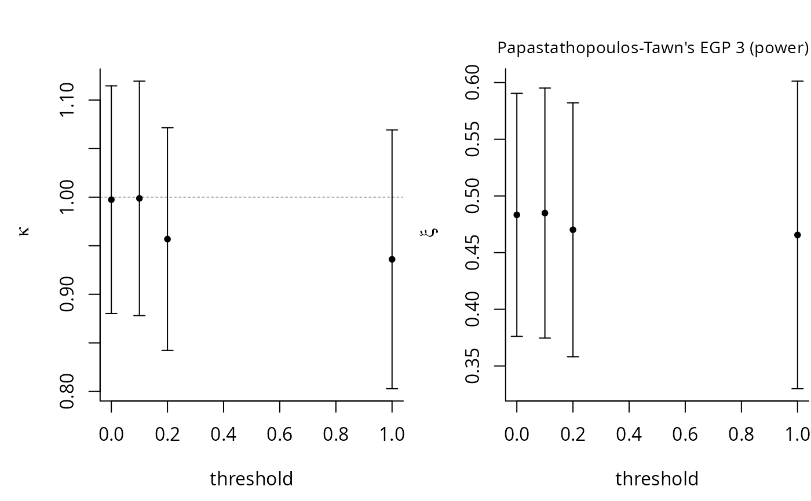
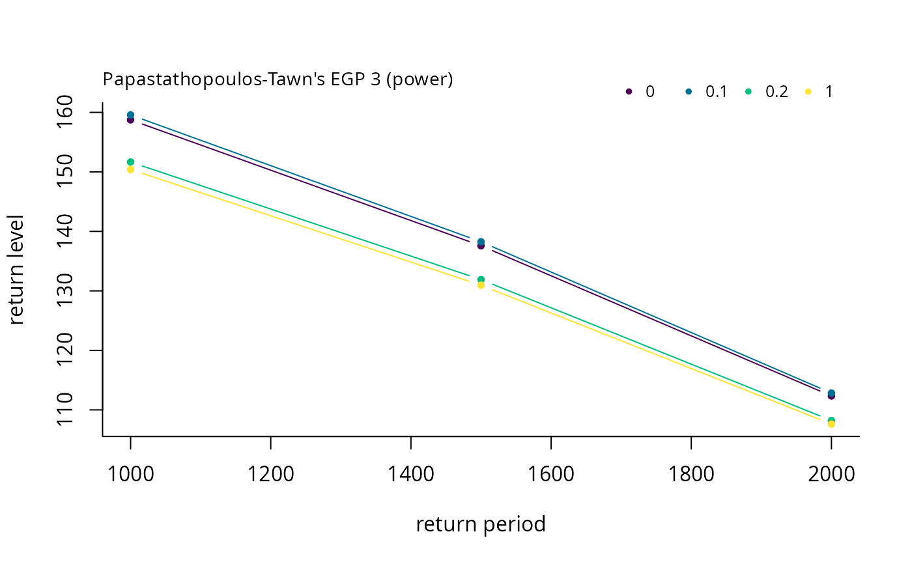

This function provides the log-likelihood and quantiles for the three different families presented
in Papastathopoulos and Tawn (2013) and the two proposals of Gamet and Jalbert (2022), plus exponential tilting. All of the models contain an additional parameter, \(\kappa \ge 0\).
All families share the same tail index as the generalized Pareto distribution, while allowing for lower thresholds.
For most models, the distribution reduce to the generalised Pareto when \(\kappa=1\) (for models gj-tnorm and logist, on the boundary of the parameter space when \(kappa \to 0\)).
egp.retlev gives the return levels for the extended generalised Pareto distributions
Arguments
- xdat
vector of observations, greater than the threshold
- thresh
threshold value
- par
parameter vector (\(\kappa\), \(\sigma\), \(\xi\)).
- model
a string indicating which extended family to fit
- show
logical; if
TRUE, print the results of the optimization- p
extreme event probability;
pmust be greater than the rate of exceedance for the calculation to make sense. See Details.- plot
logical; if
TRUE, a plot of the return levels
Value
egp.ll returns the log-likelihood value.
egp.retlev returns a plot of the return levels if plot=TRUE and a list with tail probabilities p, return levels retlev, thresholds thresh and model name model.
Details
For return levels, the p argument can be related to \(T\) year exceedances as follows:
if there are \(n_y\) observations per year, than take p
to equal \(1/(Tn_y)\) to obtain the \(T\)-years return level.
References
Papastathopoulos, I. and J. Tawn (2013). Extended generalised Pareto models for tail estimation, Journal of Statistical Planning and Inference 143(3), 131–143, <doi:10.1016/j.jspi.2012.07.001>.
Gamet, P. and Jalbert, J. (2022). A flexible extended generalized Pareto distribution for tail estimation. Environmetrics, 33(6), <doi:10.1002/env.2744>.
Examples
set.seed(123)
xdat <- rgp(1000, loc = 0, scale = 2, shape = 0.5)
par <- fit.egp(xdat, thresh = 0, model = 'gj-beta')$par
p <- c(1/1000, 1/1500, 1/2000)
# With multiple thresholds
th <- c(0, 0.1, 0.2, 1)
opt <- tstab.egp(xdat, thresh = th, model = 'gj-beta')
egp.retlev(xdat = xdat, thresh = th, model = 'gj-beta', p = p)
opt <- tstab.egp(xdat, th, model = 'pt-power', plots = NA)

egp.retlev(xdat = xdat, thresh = th, model = 'pt-power', p = p)
